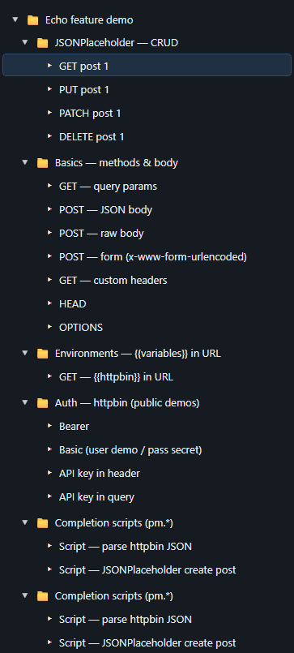
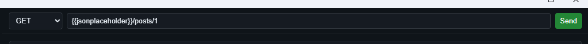
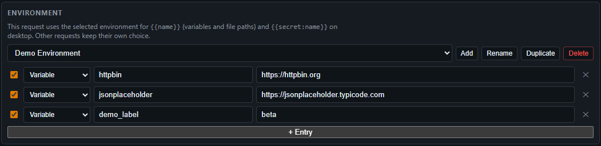
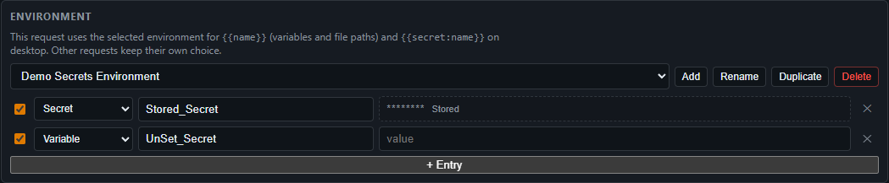
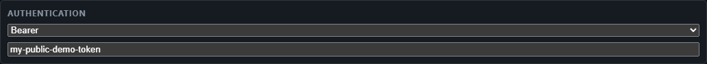
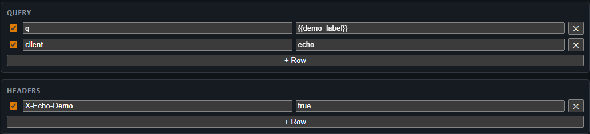
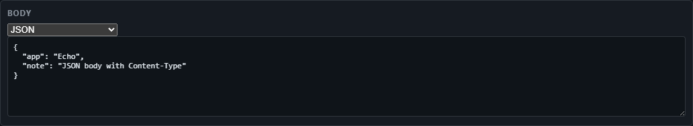
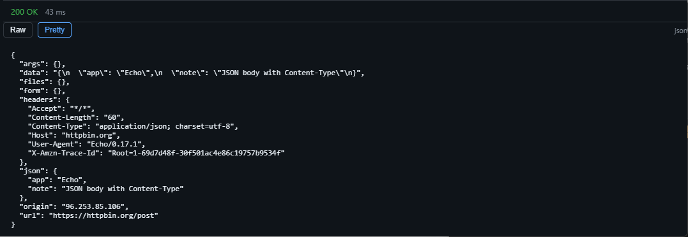
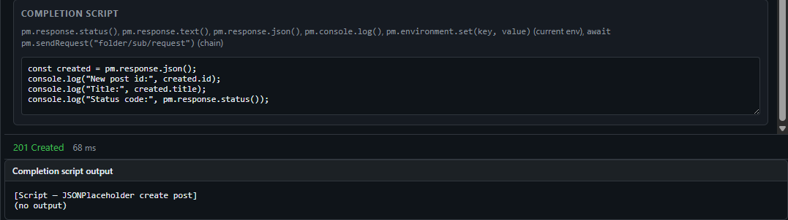
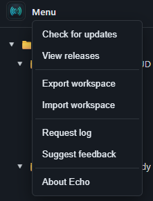

Features
Echo is a desktop HTTP client: organize requests, reuse environments and variables, and inspect responses in a focused dark UI.
Collections tree
Keep folders and requests in a sidebar. Select a request to edit and send it; the response opens below.

Request bar
Choose the method, edit the URL, and send. Query parameters and headers are first-class.

Environments and variables
Define variables per environment and use {{variableName}} in
the URL, headers, query, body, and auth fields. Each request picks an
environment; add, rename, duplicate, or delete shared definitions.

Secrets (desktop)
On the packaged app, store sensitive values in the OS credential manager
and reference them with {{secret:NAME}}. They are not written
into exported workspace JSON.

Authentication
None, Bearer token, Basic, or API key—sent as a header or query parameter depending on your choice.

Query and headers
Key/value editors for query string and request headers.

Body
Send JSON, raw text, or form bodies alongside your request.

Response
Inspect status, timing, and body. Switch views such as raw and pretty for structured content.

Completion scripts
Run an optional script after a successful response:
pm.response.status(), pm.response.text(),
pm.response.json(), and pm.console.log(...).

Import and export
Right-click a folder to export the full workspace as JSON or import a file to replace the current workspace—handy for backup and sharing.
